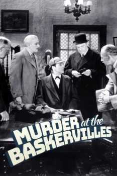

Also known as:Silver Blaze (original title)
Country:United States, 71 minutes
Spoken languages:
Genres:Crime, Mystery
Director(s):Thomas Bentley
Writer(s):
Video Codec:Unknown
Number: 1734


Certification:NR
Storyline:
Sherlock Holmes takes a vacation and visits his old friend Sir Henry Baskerville. His vacation ends when he suddenly finds himself in the middle of a double-murder mystery. Now he's got to find Professor Moriarty and the horse Silver Blaze before the great cup final horse race.
Cast:

Medium: Original DVD,
Comments: Part of: Mystery Classics - 50 Movie Pack
Loaned: No
Aspect ratio: Unknown